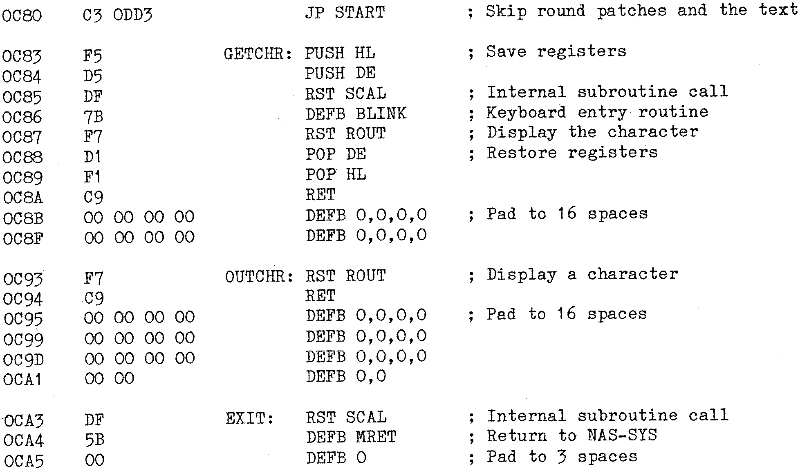

80-Bus News |
April–June 1982 · Volume 1 · Issue 2 |
| Page 25 of 55 |
|---|
So let’s look at the patch areas. The first patch, (although it’s not obviously so) is the start jump. For either NAS or CP/M versions the three bytes will be the same, C3 0DD3, but for the CP/M version, this jump will be located at 100H, whilst the NAS version will have the jump at 0C80H. (Don’t forget that my assembler prints absolute addresses the ‘right way round’ and not ‘low byte first’ as they would actually require to be loaded, so the above would be loaded as C3 D3 0D.) The next patch area is the one concerned with getting an input. As printed, it contains the CP/M version. For the NAS version this becomes a system call to ‘BLINK’. However, unlike CP/M function 1 (the input function), the keyboard input is not automatically echoed to the display, so the call to ‘BLINK’ is followed by a system restart to ‘ROUT’. Now ‘BLINK’ corrupts HL and DE, and my notes about the patches say that all registers must be preserved, so HL and DE must be ‘PUSHed’ before the system calls and ‘POPped’ afterwards. The next patch is the ‘output to display’, with the NAS version, this couldn’t be simpler, a system restart to ‘ROUT’, as ‘ROUT’ also kindly preserves all the registers there is no need to PUSH and POP them, so this patch is all of two bytes long and 14 NOPs to fill the empty space. The last patch is also dead easy, a system call to ‘MRET’ and a NOP to fill the one remaining empty space. So having patched the area it should look like this:
Good, getting there, now there are a couple of others before we go any further. The CP/M version uses code 1AH to clear the screen, and the line feed following a carriage return, code 0AH, is explicit and not implied as it is in the NAS version. Well, the ‘clear screen’ character, labelled CS only appears once at 0CD8H and this is easily changed to 0CH for the NAS version. The other one, the line feed, again appears only once at 0DD1H and this should be changed to 00H. By the way I haven’t tried this program under the NAS regime, so if it doesn’t work, drop me a line with the correct answer, to collect your ‘Prize Dodo of the Month’ medal.
So on to the program. We all know the rules of ‘Hangman’ don’t we, so there’s no need to reiterate them here. I’m one of those people who isn’t into flow charts, so I’m not going to provide one, the program flows in what I would call a linear fashion, executing in a straight line, skipping the bits that aren’t required as determined by the conditions set from the previous operation.
| Page 25 of 55 |
|---|